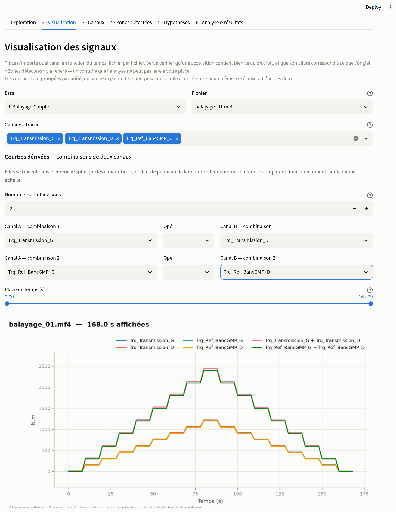
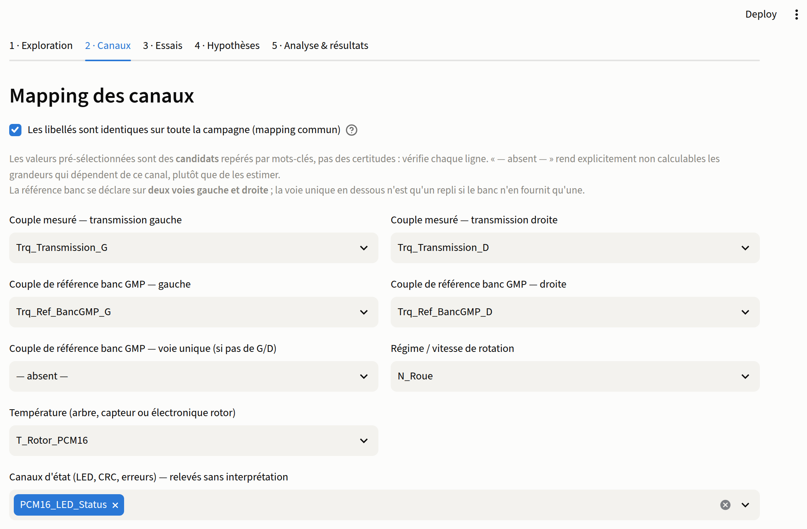
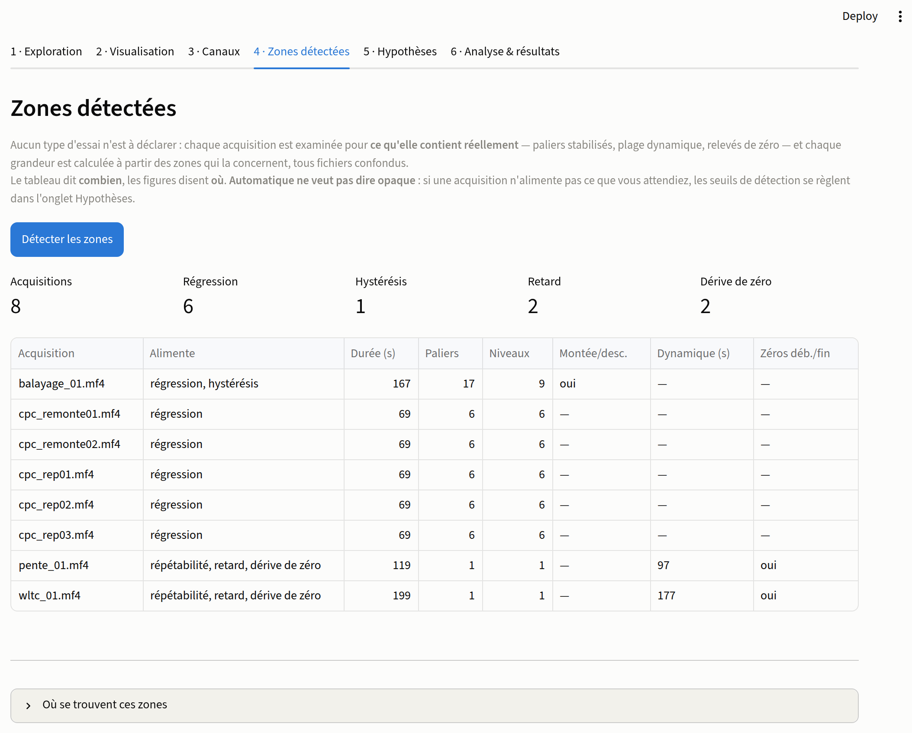
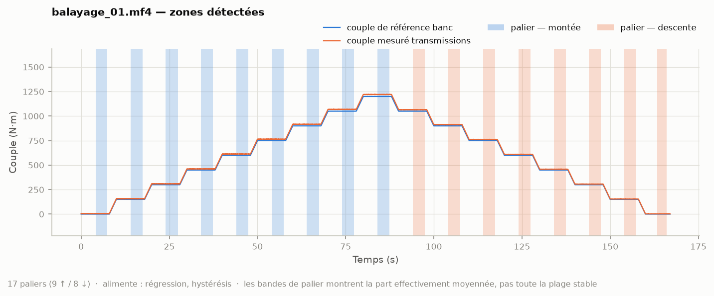
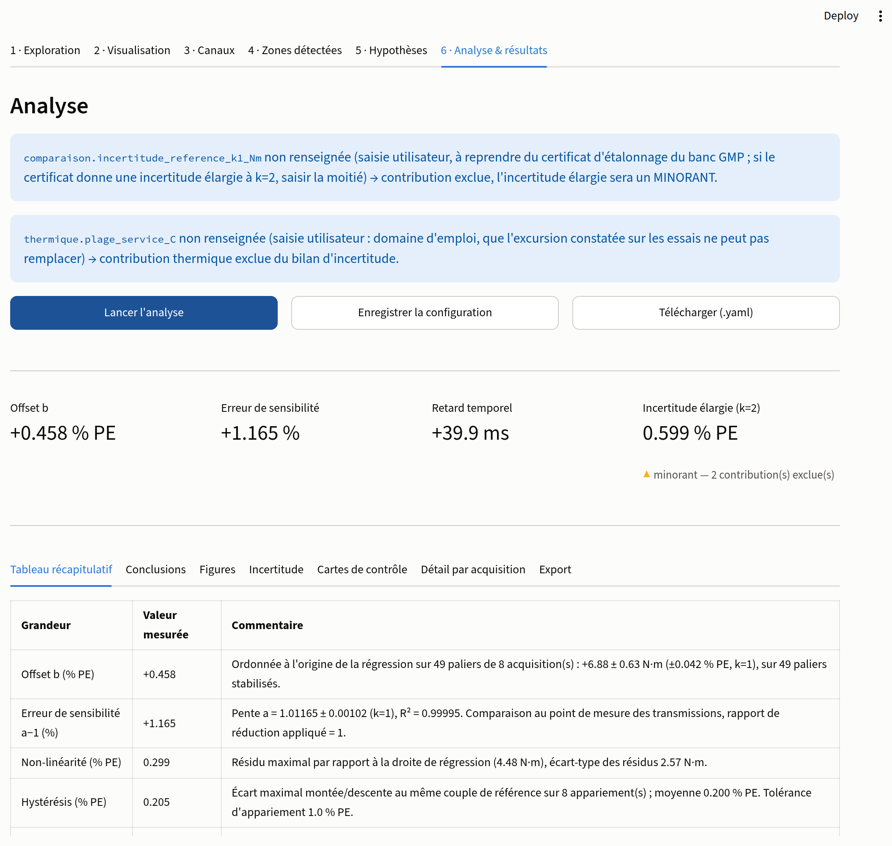
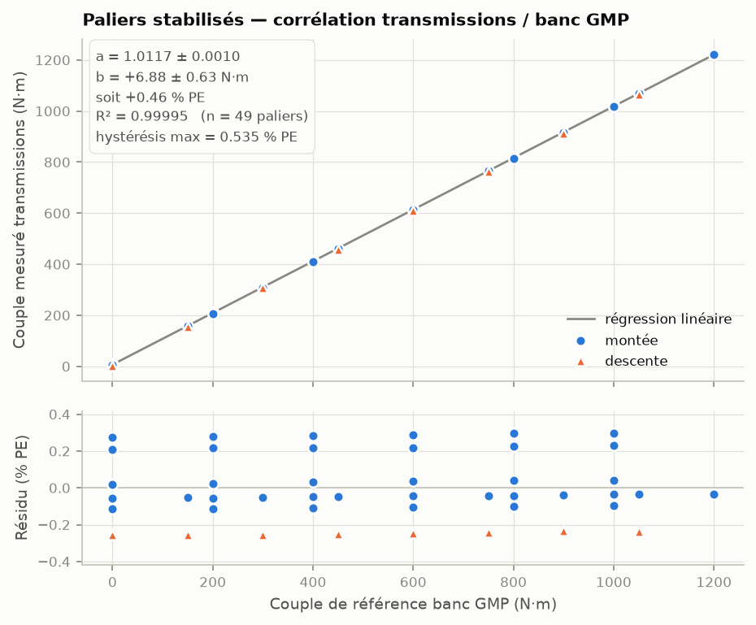
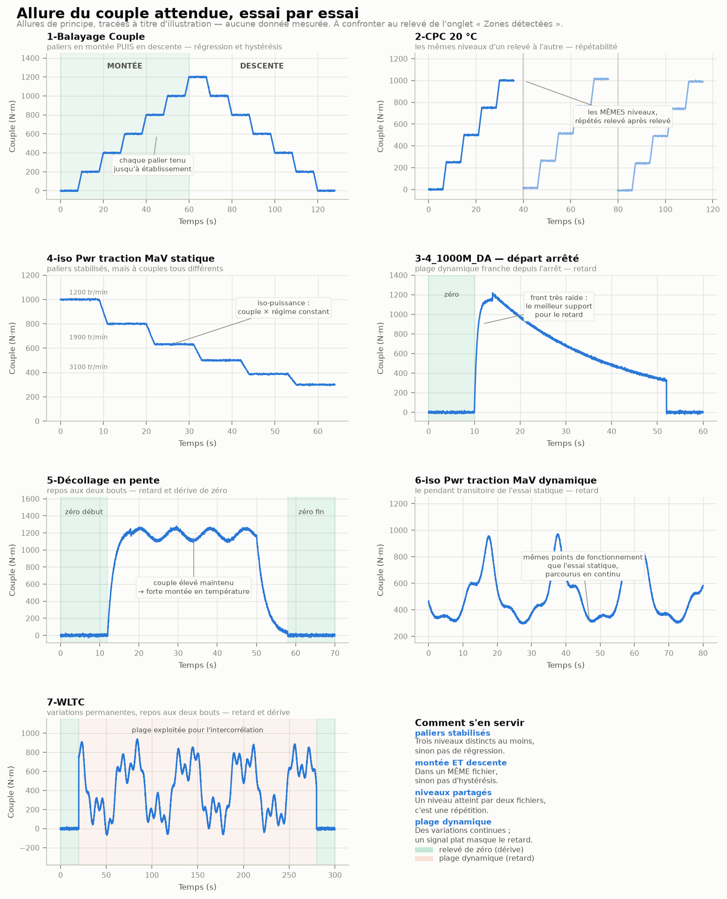
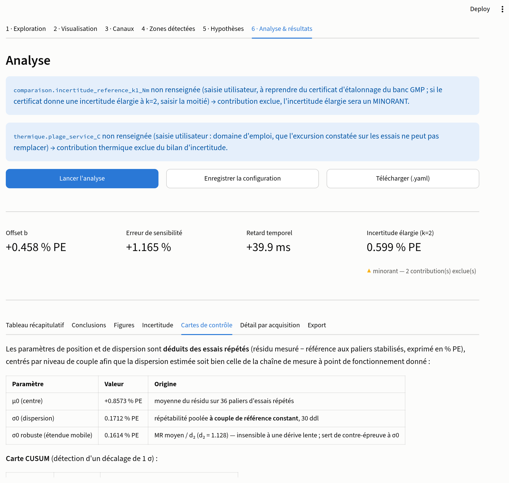

Cet outil compare le couple mesuré par les transmissions instrumentées (télémétrie Manner PCM16) au couple de référence du banc GMP, et produit les indicateurs métrologiques du chapitre 10 du rapport AMDEC ainsi que les paramètres de cartes de contrôle du chapitre 11.
Il tient deux engagements : les acquisitions ne sont jamais modifiées, et aucune grandeur n'est jamais estimée — ce qui ne peut pas être calculé est annoncé comme tel, avec son motif.
L'outil lit des acquisitions au format MDF — .mf4, .mdf et
.aif (exports ETAS INCA, qui sont des conteneurs MDF sous une extension propre
à l'outil). On lui désigne un dossier : aucun classement, aucune déclaration
de type d'essai. Il confronte le couple mesuré par les transmissions instrumentées au couple
de référence du banc, puis en tire les indicateurs du chapitre 10. Il produit un rapport
Markdown et des figures PNG directement insérables.
On ne classe pas les fichiers, on extrait leurs zones. Plutôt que de demander quel dossier contient des balayages et lequel contient des cycles, l'outil examine chaque acquisition pour ce qu'elle contient réellement — paliers stabilisés, plage dynamique, relevés de zéro — et calcule chaque grandeur à partir des zones qui la concernent, tous fichiers confondus. Un même fichier peut en alimenter plusieurs : un cycle qui débute et s'achève à l'arrêt fournit ses zéros, sa plage dynamique, et parfois quelques paliers. Le chapitre 4 détaille ce qui est cherché, et l'onglet Zones détectées montre ce qui a été trouvé, fichier par fichier.
Lecture seule stricte. Chaque .mf4 est ouvert par un
descripteur en lecture binaire. L'écriture est impossible au niveau du système de
fichiers, et aucune fonction de modification de la bibliothèque MDF n'est appelée. Un test
automatique compare les empreintes SHA-256 et les dates de modification de tous les
fichiers avant et après une analyse complète.
Aucune valeur inventée. Toute grandeur qui ne peut pas être obtenue — canal absent, excursion thermique insuffisante, pas de relevé de zéro identifiable, aucun essai répété — est restituée avec un motif explicite de non-calculabilité, repris tel quel dans le rapport. Rien n'est extrapolé, et aucune valeur par défaut ne se substitue à une mesure manquante.
Un essai n'est jamais compté deux fois en silence. Si une même
acquisition existe sous plusieurs formats dans le même dossier — releve_01.mf4 et
releve_01.aif — les deux fichiers portent les mêmes grandeurs et seraient traités
comme deux essais distincts. Rien n'échouerait : le nombre de paliers, la répétabilité et la
dispersion des cartes de contrôle seraient simplement faux. Le doublon est détecté au nom de
fichier et signalé, à l'écran comme dans le rapport. Ne conservez qu'un format par
acquisition.
Le format se vérifie au contenu. Une extension ne prouve rien :
l'outil contrôle la signature du fichier avant de le lire. Un .aif qui ne serait
pas un conteneur MDF est refusé explicitement, avec ses premiers octets — de quoi identifier
le format réel — plutôt qu'interprété à l'aveugle.
| Terme | Définition |
|---|---|
| Résidu | Toujours couple mesuré − couple de référence. Un résidu positif signifie que les transmissions lisent plus que le banc. |
| % PE | Pourcentage de la pleine échelle du capteur de couple des transmissions (1500 N·m par défaut). À 1500 N·m de pleine échelle, 1 % PE = 15 N·m. |
| Voie comparée | Le mode de comparaison (gauche, droite, moyenne,
somme) s'applique de la même façon aux voies mesurées et
aux voies de référence. |
Pourquoi le % PE plutôt que le % de lecture. L'offset, la dérive de zéro, l'hystérésis et la non-linéarité ne dépendent pas du couple appliqué. Rapportés à la lecture, ils exploseraient près de zéro et ne se résumeraient à aucun chiffre unique. Rapportés à l'étendue de mesure, ils tiennent en une valeur valable sur toute la plage — c'est la convention des fiches capteur et des certificats d'étalonnage.
Le banc GMP fournit deux voies de référence, une par sortie, et les transmissions deux voies de mesure. Le mode dit comment les combiner :
| Mode | Couple mesuré | Couple de référence | Usage |
|---|---|---|---|
moyenne | (G + D) / 2 | (réf G + réf D) / 2 | Défaut. Cohérent avec une référence prise au même point de la chaîne. |
somme | G + D | réf G + réf D | Si l'on raisonne en couple total aux roues. |
gauche | G | réf G | Caractérise une seule transmission, sans mélange des deux voies. |
droite | D | réf D | Idem, côté droit. |
Le mode s'applique aux deux côtés simultanément, et c'est essentiel : comparer une somme de voies mesurées à une moyenne de voies de référence produirait un facteur 2 sur l'erreur de sensibilité — une valeur fausse, mais parfaitement crédible.
Python 3.10 à 3.13. Au-delà, l'installation échoue sur un message qui parle de Visual C++ : la cause réelle est l'absence de binaire précompilé pour le module de décompression dont dépend la lecture MDF4. Installer une version prise en charge est la seule solution raisonnable ; un compilateur ne se justifie pas.
| Commande | Effet |
|---|---|
py -0 | liste les versions de Python installées |
py -3.13 -m venv .venv | crée l'environnement isolé |
.venv\Scripts\activate | l'active (à refaire à chaque terminal) |
python -m pip install -r requirements.txt | installe les dépendances |
python -m pytest tests\ -q | vérifie l'installation — doit afficher 116 passed |
python scripts\03_interface.py | lance l'interface |
Sans activer l'environnement. .venv\Scripts\python.exe scripts\03_interface.py
fonctionne toujours, quelle que soit la fenêtre de terminal et sans dépendre de la politique
d'exécution PowerShell.
python tests\generer_mf4_synthetique.py --sortie donnees_synthetiques fabrique une
arborescence d'essais artificiels à vérité connue : gain, offset, hystérésis,
retard, dérive thermique et biais de remontage y sont injectés à des valeurs exactes, que les
tests vérifient que l'outil retrouve. C'est le moyen de valider la chaîne complète avant de
toucher aux vraies acquisitions.
Supprimez ce dossier avant de pointer l'outil sur vos données réelles : s'il se trouve à l'intérieur de votre racine d'acquisitions, il apparaîtrait comme un essai supplémentaire, et des valeurs fabriquées se mélangeraient à vos résultats.
Le dossier des acquisitions et celui de sortie se saisissent au clavier dans la barre latérale, ou se choisissent d'un clic sur Parcourir…, qui ouvre l'explorateur de fichiers du poste — celui de Windows, tel que vous l'utilisez partout ailleurs.
C'est Python qui ouvre la fenêtre, pas le navigateur. Une page web n'a pas le droit d'ouvrir l'explorateur du système ni de lire un chemin local — aucune application web ne le peut. Mais le processus Python, lui, tourne sur votre poste : c'est donc lui qui affiche la boîte de dialogue, dans un sous-processus séparé pour que Tk ne perturbe jamais l'application. Les fichiers ne sont pour autant jamais transmis nulle part : ils sont lus sur place, en lecture seule.
Si Tk n'est pas installé, ou si l'application est servie depuis une machine distante, le bouton se désactive en disant pourquoi plutôt que d'échouer en silence — et le chemin reste saisissable au clavier. Sous Windows, Tk est fourni avec Python : le cas ne se présente pas.
Mapping des canaux, dossiers et hypothèses sont enregistrés au fil de la saisie dans
~/.amdec_correlation/derniere_configuration.yaml, et repris au lancement suivant. Les
libellés de canaux ne changent pas d'une campagne à l'autre : les redéclarer chaque fois serait une
corvée sans contrepartie. Un bandeau signale la reprise, et un bouton Oublier la mémoire
repart des valeurs par défaut.
Une configuration vide n'écrase jamais une mémoire renseignée. Un lancement fait avant l'inventaire produit un mapping vide ; s'il était mémorisé tel quel, il effacerait le travail de la veille. Ce cas est explicitement écarté.
Mémoire et fichier de projet sont deux choses. La mémoire est
automatique et propre à votre compte ; le fichier config/correlation.yaml, lui, est
écrit à la demande par Enregistrer la configuration et se verse au dossier d'essai comme
trace de ce qui a été fait.
| Onglet | Ce qu'on y fait | Ce qui en sort |
|---|---|---|
| 1 · Exploration | lire les acquisitions, découvrir les canaux réellement présents | liste des canaux, unités, cadences, bases de temps |
| 2 · Visualisation | tracer n'importe quel canal, fichier par fichier | la confirmation que l'acquisition contient ce qu'on croit |
| 3 · Canaux | associer chaque rôle à un canal réel | le mapping |
| 4 · Zones détectées | vérifier ce que l'outil a trouvé dans chaque acquisition | le relevé de ce qui alimente quoi |
| 5 · Hypothèses | fixer les bornes de traitement et les deux saisies utilisateur | les hypothèses citées dans le rapport |
| 6 · Analyse | lancer, lire, exporter | rapport Markdown + figures PNG |
L'interface ne calcule rien. Elle assemble une configuration, appelle
la bibliothèque et affiche ce qui en sort. Les chiffres à l'écran sont ceux du rapport.
La configuration se télécharge en YAML et rejoue à l'identique en ligne de commande —
python scripts\02_analyse.py --config correlation.yaml — ce qui permet de mettre au
point les réglages à la souris puis de rejouer en lot, ou de verser le YAML au dossier
d'essai comme trace de ce qui a été fait.
L'outil lit un échantillon de fichiers et liste tous les canaux présents, avec leur unité,
leur groupe, leur nombre d'échantillons, leur cadence et leur plage de temps. C'est ce
relevé qui sert à confirmer les libellés — rien n'est supposé d'une convention de
nommage. Les acquisitions posées directement dans le dossier racine sont regroupées sous
(racine) ; les sous-dossiers, s'il y en a, forment chacun un groupe — c'est un
simple classement d'affichage, sans effet sur les calculs.
Deux avertissements peuvent apparaître ici, et tous deux méritent attention :
Trace n'importe quel canal en fonction du temps, fichier par fichier. C'est le seul endroit où l'on vérifie qu'une acquisition contient bien ce qu'on croit, et que son allure correspond à ce que l'onglet Zones détectées y a repéré — un contrôle que l'analyse ne peut pas faire à votre place.

Un panneau par unité. Les courbes sont groupées par unité plutôt que superposées sur un axe unique : un couple en N·m et un régime en tr/min tracés ensemble écraseraient l'un des deux, et leur donner deux échelles verticales inventerait une corrélation que les données ne portent pas.
Chaque rôle se choisit dans une liste déroulante peuplée des noms réellement trouvés dans les acquisitions : aucun libellé n'est à recopier, ce qui supprime la première source d'erreur de tout l'outil. Les valeurs pré-sélectionnées sont des candidats repérés par mots-clés — à vérifier ligne par ligne, jamais des certitudes.

| Rôle | Rôle dans les calculs |
|---|---|
| Couple mesuré gauche / droite | la grandeur caractérisée. Deux voies permettent en outre le contrôle de redondance. |
| Couple de référence gauche / droite | la référence banc, une voie par sortie. |
| Couple de référence — voie unique | repli si le banc ne fournit qu'une seule voie. Ignoré dès que les deux voies latérales sont renseignées. |
| Régime | détection du repos (dérive de zéro) et corrélation résidu / point de fonctionnement. |
| Température | sensibilité thermique. Arbre, capteur ou électronique rotor. |
| Canaux d'état | LED télémétrie, CRC, compteurs d'erreurs. Relevés et restitués sans interprétation : la valeur nominale n'est pas connue de l'outil. |
Mapping commun. Si les libellés sont identiques sur toute la campagne — le cas courant — la case en haut permet de tout déclarer une seule fois. Décochez-la seulement si les noms diffèrent d'un dossier à l'autre.
« — absent — » est une réponse valide. Marquer un canal absent rend explicitement non calculables les grandeurs qui en dépendent, plutôt que de les estimer. C'est toujours préférable à un mapping approximatif.
Rien n'est à déclarer ici. Le bouton Détecter les zones relit les acquisitions et affiche, fichier par fichier, ce qui y a été trouvé et ce que chacun alimente. C'est un relevé à vérifier, pas une saisie.

| Colonne | Ce qu'elle dit |
|---|---|
| Alimente | La conclusion du relevé : les grandeurs auxquelles cette acquisition contribue. Les colonnes suivantes en sont la justification. |
| Paliers / Niveaux | Nombre de plages stabilisées trouvées, et nombre de niveaux de couple distincts qu'elles couvrent. Trois niveaux distincts au moins pour qu'une régression ait un sens ; en deçà, l'acquisition n'alimente que la répétabilité. |
| Montée/desc. | Des paliers de sens opposés existent au même niveau : c'est ce qui rend l'hystérésis calculable, et cela se joue à l'intérieur d'un fichier. |
| Dynamique (s) | Durée de la plage d'activité continue retenue pour l'intercorrélation. Vide si le signal est trop stationnaire pour qu'un retard soit identifiable. |
| Zéros déb./fin | Deux plages de repos distinctes, l'une en début l'autre en fin d'acquisition : la condition d'existence de la dérive de zéro. |
Sous le tableau, une figure par acquisition pose chaque zone sur le signal, en aplat de fond et par type. Le tableau dit combien, la figure dit où : un palier posé sur un transitoire, une plage dynamique qui déborde sur un arrêt ne se voient que là. Les mêmes figures sont écrites en PNG dans le dossier de sortie au moment de l'analyse.

Une bande de palier plus étroite que le plateau est normale. Elle montre la part effectivement moyennée — la fraction finale de la plage stable — et non toute la plage : le transitoire d'établissement est volontairement écarté.
Les plages actives écartées au profit de celle retenue apparaissent en hachures. C'est ce qui rend l'arbitrage vérifiable : sur un départ arrêté, le front de couple et le long palier de rétro ondulé sont tous deux « actifs », et retenir le mauvais ferait identifier le retard sur du bruit autour d'une constante — sans que rien ne le signale dans le chiffre produit.
Automatique ne veut pas dire opaque. Si une acquisition n'alimente pas ce que vous en attendiez, le tableau dit laquelle et sur quel critère, et la figure montre pourquoi. Le réglage se fait à l'onglet Hypothèses — jamais en forçant un résultat.
Deux choses restent à déclarer, dans la barre latérale, parce qu'aucun traitement du signal ne peut les établir :
| Saisie | Ce qu'elle commande |
|---|---|
| Sorties du banc chargées symétriquement | À cocher si les deux transmissions voient le même couple par construction. C'est la condition pour que le résidu gauche − droite soit un indicateur métrologique et non un écart physique réel. À laisser décoché si un essai sollicite volontairement le différentiel, ou s'accompagne de patinage avec intervention de l'antipatinage d'un seul côté. |
| Démontage / remontage réalisé | Déclare si la chaîne de mesure a été déposée puis reposée au cours de la campagne. Non rend la répétabilité après remontage non calculable pour la bonne raison : la grandeur n'est pas définie ici, elle n'a pas été oubliée. |
En haut, deux saisies utilisateur qu'aucun traitement du signal ne peut produire :
Laissées vides, leur contribution est exclue du bilan, qui est alors explicitement annoncé comme un minorant, avec la liste des exclusions. Le rapport reste juste, seulement moins complet.

Sept vues sont disponibles après l'analyse :
| Vue | Contenu |
|---|---|
| Tableau récapitulatif | les neuf lignes du chapitre 10, avec valeur et commentaire |
| Conclusions | une conclusion rédigée par essai dynamique, collable telle quelle |
| Figures | toutes les figures produites |
| Incertitude | le bilan détaillé, contribution par contribution |
| Cartes de contrôle | μ0, σ0 et les seuils CUSUM / EWMA du chapitre 11 |
| Détail par acquisition | ce qui a été trouvé dans chaque fichier et ce qu'il a alimenté, y compris les échecs — c'est là qu'un chiffre du tableau se remonte à sa source |
| Export | rapport Markdown et archive des figures PNG |
Enregistrez votre configuration. Le bouton Enregistrer la configuration écrit un fichier sur le poste ; la barre latérale propose ensuite de la Recharger. Un rafraîchissement de page ne coûte alors plus la saisie.

Aucun type n'est à déclarer : ce sont les zones présentes dans chaque acquisition qui déterminent ce qu'elle produit. Trois familles sont recherchées — paliers stabilisés, plage dynamique, plages de repos — et un même fichier peut contenir les trois. Ce que les paliers permettent dépend en outre de leur agencement : leur sens à l'intérieur d'un fichier, et les niveaux qu'ils partagent d'un fichier à l'autre.
Ce sont les zones les plus précieuses du chapitre 10 : offset et gain sont des caractéristiques du capteur, pas de l'essai. Étant statiques, elles sont insensibles à tout défaut de synchronisation — d'où leur valeur pour trancher entre gain et retard.
C'est la seule grandeur qui se joue à l'intérieur d'un fichier : comparer une montée d'une acquisition à la descente d'une autre mélangerait l'hystérésis à la dérive entre les deux relevés.
Ce regroupement inter-fichiers est ce qui rend la répétabilité calculable sans rien déclarer : deux acquisitions passant par le même point de fonctionnement se répètent, quel qu'ait été le protocole. Sur un essai iso-puissance, le couple varie d'un point à l'autre en suivant l'inverse du régime : deux points d'un même relevé ne sont pas au même couple, et il faut donc plusieurs relevés couvrant les mêmes points.
Une seule plage de repos couvrant tout l'essai ne constitue pas deux relevés : sans début et fin, il n'y a pas de dérive à mesurer.

| Acquisition | Zones attendues | Ce qu'elle alimente |
|---|---|---|
| 1-Balayage Couple | paliers, montée puis descente | régression, offset, sensibilité, non-linéarité, hystérésis |
| 2-CPC 20 °C | paliers répétés d'un relevé à l'autre | régression et répétabilité |
| 3-4_1000M_DA | plage dynamique franche | retard. Le front de couple au décollage est la sollicitation la plus raide de la campagne, donc le meilleur support d'identification |
| 4-iso Pwr_traction MaV_statique | paliers à iso-puissance | régression, et répétabilité si plusieurs relevés couvrent les mêmes points |
| 5-Décollage en pente | plage dynamique, repos aux deux bouts | retard, dérive de zéro |
| 6-iso Pwr_traction MaV_dynamique | plage dynamique | retard |
| 7-WLTC | plage dynamique longue, repos aux deux bouts | retard, dérive de zéro |
Ce tableau dit ce qu'on attend de chaque essai. L'onglet Zones détectées dit ce qui a été trouvé. Un écart entre les deux est une information : soit l'acquisition ne contient pas ce qu'on croyait, soit un seuil de détection est trop serré.
Un couple d'essais à exploiter. Les essais iso-puissance statique et dynamique parcourent les mêmes points de fonctionnement, l'un en stabilisé, l'autre en transitoire. Un écart présent en dynamique mais absent en statique aux mêmes points signe la synchronisation ; un écart présent dans les deux signe un écart de modèle.
Chaque fiche donne la définition, la méthode, l'hypothèse structurante et la façon de lire le résultat. Les neuf premières correspondent aux lignes du tableau récapitulatif ; la dixième est un indicateur complémentaire.
Voir le chapitre 7, qui lui est consacré.
Pour chaque essai dynamique, l'outil rédige une conclusion de trois phrases au plus, directement utilisable dans le rapport. Elle applique la grille suivante, dans cet ordre de priorité :
| Constat | Cause retenue | Ce que cela implique |
|---|---|---|
| écart uniquement en transitoire — le recalage réduit nettement le RMS du résidu | synchronisation | défaut des voies d'acquisition, pas de la chaîne de mesure de couple |
| écart proportionnel au couple | gain | erreur de sensibilité : étalonnage de la jauge ou du conditionnement |
| écart constant | offset capteur | corrigeable par remise à zéro ; l'aptitude en sensibilité n'est pas en cause |
| écart dépendant du point de fonctionnement et reproductible d'un essai à l'autre | écart de modèle | écart entre la grandeur reconstruite au banc et le couple réellement transmis ; aucune correction de la voie transmissions n'est justifiée |
Pourquoi la synchronisation est testée en premier. Un défaut de synchronisation produit mécaniquement, sur un signal transitoire, un résidu qui ressemble à un défaut de gain. L'inverse n'est pas vrai. Tester la synchronisation d'abord évite d'attribuer à la chaîne de mesure un simple décalage d'horloge.
Lorsque plusieurs défauts coexistent, la conclusion nomme la cause dominante et mentionne les autres en incise. Un retard significatif mais qui n'explique qu'une faible part du résidu sera signalé sans être désigné comme la cause.
Les contributions sont combinées en somme quadratique, sous hypothèse de non-corrélation, puis élargies par k = 2, soit un niveau de confiance d'environ 95 %.
| Contribution | Loi | Origine |
|---|---|---|
| Non-linéarité | rectangulaire | résidu max de la régression sur les paliers |
| Hystérésis | rectangulaire | demi-écart montée/descente |
| Répétabilité | normale (type A) | écart-type poolé mesuré |
| Dérive de zéro | rectangulaire | dérive la plus forte constatée |
| Effet thermique | rectangulaire | sensibilité × plage de service |
| Référence banc GMP | normale | saisie utilisateur — certificat d'étalonnage |
Une grandeur bornée dont on ne connaît que la demi-étendue est traitée en loi rectangulaire, soit u = a / √3. La répétabilité, évaluation de type A, est directement un écart-type.
Minorant. Toute contribution non disponible est exclue et signalée, et le résultat est alors explicitement annoncé comme un minorant, avec la liste des exclusions. C'est le cas tant que l'incertitude du banc ou la plage de service ne sont pas renseignées. Le chiffre reste juste — il est seulement incomplet, et le rapport le dit.

| Paramètre | Origine |
|---|---|
| μ0 | moyenne du résidu sur les paliers des essais répétés |
| σ0 | répétabilité poolée à couple de référence constant |
| σ0 robuste | étendue mobile moyenne / d₂ — contre-épreuve insensible à une dérive lente |
Pourquoi σ0 est la variabilité court terme. C'est la dispersion à point de fonctionnement donné et sans démontage. Les décalages entre essais ou entre remontages sont précisément ce que la carte doit détecter — pas ce qui doit élargir ses limites. Le rapport vérifie d'ailleurs le dimensionnement en exprimant la dispersion de remontage en multiples de σ0.
Les multiplicateurs ne sont pas arbitraires non plus : ce sont les valeurs tabulées donnant les longueurs moyennes de série sous contrôle (ARL0) usuelles en maîtrise statistique des procédés.
| Carte | Paramètre | Justification |
|---|---|---|
| CUSUM | k = 0,5 σ0 | optimal pour détecter un décalage de 1 σ |
| h = 4 σ0 (alerte) | ARL0 ≈ 168 | |
| h = 5 σ0 (alarme) | ARL0 ≈ 465 | |
| EWMA | λ = 0,20 | compromis usuel pour des décalages de 0,5 à 1 σ |
| L = 2,0 (alerte) | limite à ≈ 2 σ | |
| L = 2,962 (alarme) | ARL0 ≈ 370 pour λ = 0,20 |
Avec σ_EWMA(∞) = σ0 × √(λ / (2 − λ)), les limites à appliquer sont μ0 ± L × σ_EWMA(∞).
Condition d'emploi de μ0. Dès qu'une erreur de sensibilité subsiste, le résidu dépend du couple appliqué : μ0 n'a de sens que si la surveillance porte sur des points de fonctionnement comparables à ceux ayant servi à l'estimer. Pour une surveillance sur plage étendue, portez en carte le résidu après correction de gain, dont la cible est alors nulle. σ0 n'est pas concerné : il est estimé à couple constant.
Une mention non calculable n'est pas une panne : c'est un refus délibéré d'inventer. Le motif exact accompagne toujours la mention. Voici les cas les plus fréquents et leur traitement.
| Grandeur | Motif possible | Que faire |
|---|---|---|
| Hystérésis | aucune acquisition ne comporte à la fois une montée et une descente | vérifier la colonne Montée/desc. de l'onglet Zones ; si elle est vide partout, la grandeur n'existe pas dans cette campagne |
| Régression | moins de trois niveaux de couple distincts sur l'ensemble des paliers | desserrer la tolérance de stabilité ou raccourcir la durée minimale de palier : des plages stabilisées ont pu être écartées |
| Répétabilité | aucun niveau de couple atteint par au moins deux acquisitions | vérifier que les relevés répétés sont bien dans le dossier analysé, ou augmenter la tolérance d'appariement |
| Répétabilité après remontage | les groupes avant/après ne peuvent pas être devinés | déclarer les essais par dossier si la campagne comporte un remontage ; si aucun n'a eu lieu, l'indiquer dans l'onglet Hypothèses |
| Retard temporel | aucune plage dynamique contiguë assez longue | abaisser le seuil d'activité ou allonger la durée de comblement, ou reconnaître que les essais sont trop stationnaires |
| Sensibilité thermique | excursion thermique insuffisante, ou canal de température absent | rien à forcer : une pente non identifiable ne doit pas être extrapolée |
| Dérive de zéro | aucune acquisition n'a de relevé de repos en début et en fin | normal si aucun essai ne revient à l'arrêt ; sinon élargir la fraction de bord |
| Résidu gauche − droite | chargement non déclaré symétrique, ou une seule voie mesurée | cocher Sorties du banc chargées symétriquement si c'est le cas |
Deux situations très différentes mènent à « non calculable », et le rapport les distingue : une grandeur non définie (aucun remontage n'a eu lieu — il n'y a rien à mesurer) n'est pas une grandeur non trouvée (la zone qui la porterait est absente des acquisitions). La nuance compte dans un document relu par des tiers.
Un refus se corrige par un seuil, jamais par une valeur. Quand une grandeur manque, le bon réflexe est de regarder l'onglet Zones détectées pour voir quelle zone n'a pas été trouvée, puis d'ajuster le critère correspondant dans Hypothèses — et d'accepter le refus si la zone n'existe réellement pas.
| Terme | Définition |
|---|---|
| PE — pleine échelle | étendue de mesure nominale du capteur de couple des transmissions. À 1500 N·m, 1 % PE = 15 N·m. |
| Résidu | couple mesuré − couple de référence. Positif = les transmissions lisent plus que le banc. |
| Palier stabilisé | fenêtre où l'écart-type du couple de référence reste sous un seuil. Seule la fraction finale est moyennée, pour écarter le transitoire d'établissement. |
| ddl — degrés de liberté | nombre d'observations indépendantes moins le nombre de paramètres estimés. Mesure la solidité d'un écart-type. |
| Écart-type poolé | combinaison des écarts-types de plusieurs groupes, pondérée par leurs degrés de liberté. Suppose une dispersion homogène. |
| k — facteur d'élargissement | multiplicateur appliqué à l'incertitude-type. k = 2 ≈ 95 % de confiance. |
| Incertitude-type | incertitude à k = 1. Un certificat annonçant U à k = 2 impose de saisir U / 2. |
| Loi rectangulaire | toutes les valeurs d'un intervalle sont également probables : u = demi-étendue / √3. |
| Type A / type B | évaluation par analyse statistique de mesures répétées (A) ou par tout autre moyen — certificat, notice (B). |
| ARL0 | longueur moyenne de série sous contrôle : nombre moyen de points avant une fausse alarme. Plus il est élevé, moins la carte crie au loup. |
| CUSUM | carte de somme cumulée : accumule les écarts à la cible, sensible aux petits décalages persistants. |
| EWMA | moyenne mobile exponentiellement pondérée : lisse l'historique, λ règle la mémoire. |
| Intercorrélation | produit de deux signaux en fonction d'un décalage temporel. Son maximum donne le retard de l'un sur l'autre. |
| MDF4 | format de fichier de mesure (.mf4). Chaque groupe de canaux y possède son propre canal maître, donc sa propre base de temps. |
| Base de temps commune | grille uniforme sur laquelle tous les canaux sont ramenés, couvrant l'intersection de leurs plages. Aucune extrapolation. |
Pour aller plus loin. Le README.md du projet décrit
l'architecture et l'usage en ligne de commande. Le fichier
config/correlation.example.yaml documente chaque paramètre à l'endroit où il se
règle. Le § « Hypothèses de traitement » du rapport généré reprend l'intégralité des bornes
effectivement appliquées à l'analyse — c'est lui qui fait foi.